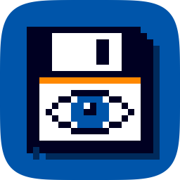
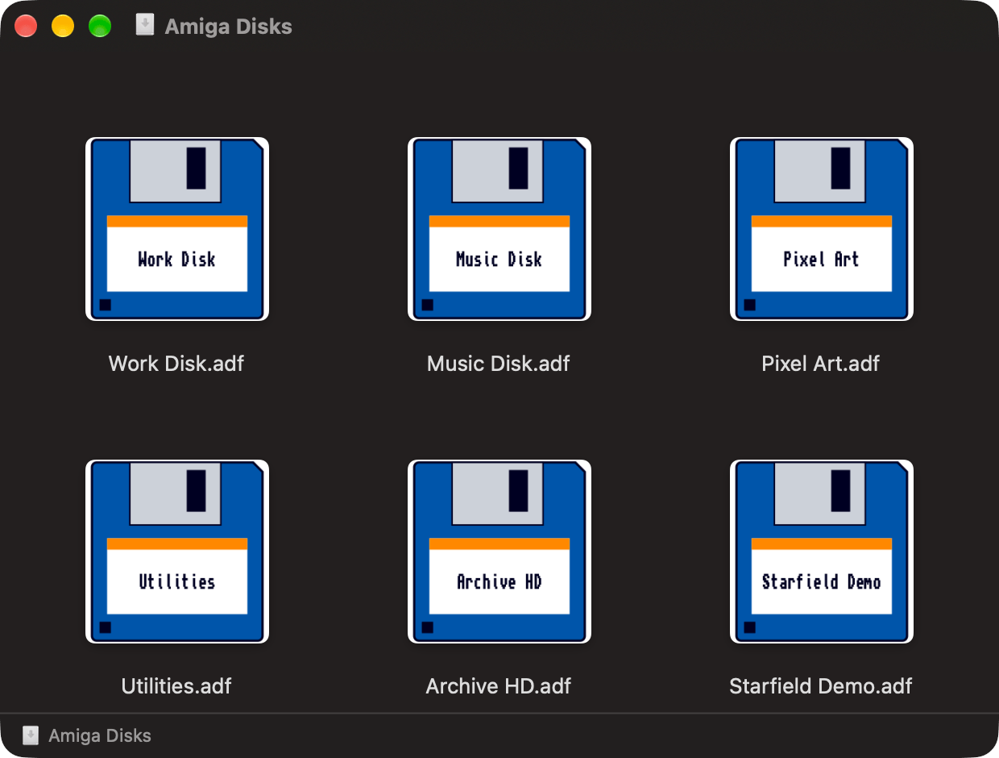
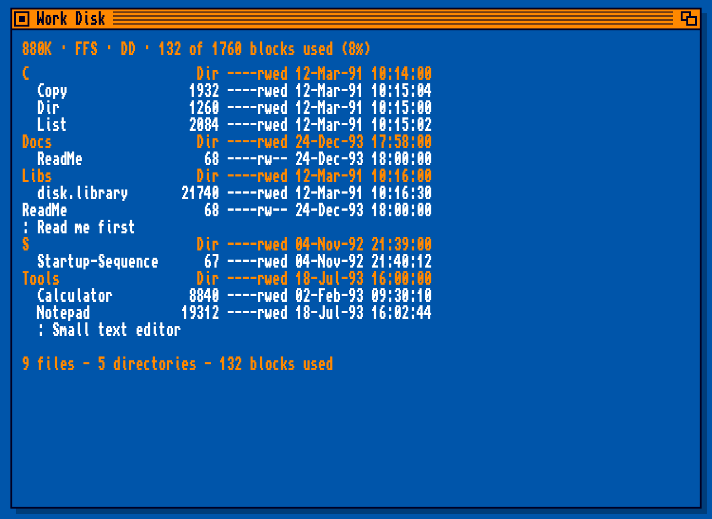
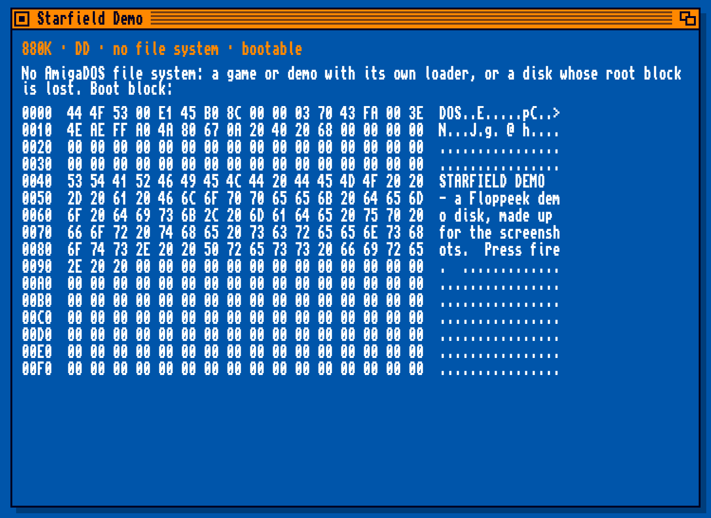

Floppeek
Quick Look for Amiga disk images
Press Space on an .adf in the Finder and the disk opens as a Workbench window, every drawer listed. In the Finder, each disk becomes a floppy with its name on the label.
brew install --cask gfazioli/tap/floppeek

What it does
Every drawer and file, with sizes, protection bits, dates and comments, the way AmigaDOS List prints them, and how full the disk is.
In the Finder each .adf becomes a 3.5" floppy with the volume's name on its label, so a folder of disks reads like a disk box.
Disks that boot their own loader have no file system. Floppeek shows their boot block, in hex, and whether it boots.
The Old and the Fast File System, double and high density disks, and dumps of up to 84 cylinders.
Floppeek never trusts a pointer on the disk: loops, blocks outside the disk and bad checksums are listed under what can still be read.
The extensions run in Apple's sandbox, read only the file being previewed and never touch the network. MIT-licensed.
See it


Install
- Download the DMG with the button above, open it and drag Floppeek onto Applications. It is signed and notarized by Apple. Or use Homebrew.
- Open Floppeek once. That registers its two extensions with macOS; the window says what to do and you can close it. Nothing keeps running.
- Press Space on an
.adfin the Finder. In icon view, every disk is already a floppy. - Nothing happens? Turn Floppeek on in System Settings › General › Login Items & Extensions › Quick Look, or reset Quick Look with
qlmanage -rand relaunch the Finder.
1> brew install --cask gfazioli/tap/floppeek ==> Installing Cask floppeek ==> Moving App 'Floppeek.app' to '/Applications/Floppeek.app' 🍺 floppeek was successfully installed! 1> open -a Floppeek 1> brew upgrade --cask floppeek ; later, for a new version
Floppeek needs macOS 15 Sequoia or later, on Apple silicon or Intel.
Release notes
The notes of every version are on GitHub Releases.